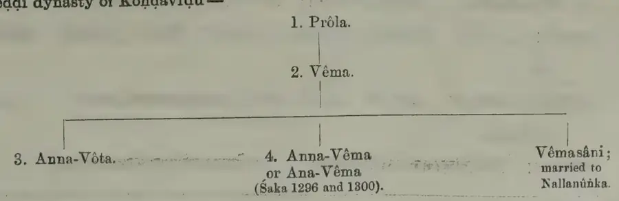

Naḍûpûru grant of Anna-Vêma ; Śaka-Saṁvat 1296
No. 39.—NADUPURU GRANT OF ANNA-VEMA;
SAKA-SAMVAT 1296.
BY E. HULTZSCH, PH.D.
The original of this inscription belonged to the late Sir Walter Elliot. I edit it from two sets of impressions, prepared for Sir Walter Elliot, and kindly made over to me by Dr. Fleet, who has noted the following details on the cover containing the impressions:—“Three copper plates, 10 by 4 inches; in fair order if cleaned. The edges are slightly raised into rims. The ring has been cut; it is about ” thick and 4” in diameter, and has a kneeling bull soldered on to it. The plates are marked ‘21’ in white paint; but there is no label to say where they come from.” The second sides of the three plates are numbered with the Telugu numerals 1, 2, 3, respectively, between the ring-hole and the edge.
The alphabet is Telugu. Of orthographical peculiarities the following deserve to be noted. The letter bh is not distinguished from b if the vowels ā, ō, au and i are attached to it or if it forms the second consonant of a group (as in तश्चक्त, line 11, and सर्वान्माविनः, l. 54), and if, consequently, the right top-stroke which distinguishes bh from b, disappears; only in two cases (bhi of दंष्ट्राभिचात, l. 2, and नामि, l. 3), the aspiration is then denoted by a vertical line below the letter. In the aksharas rya (ll. 33 to 39) and rri (l. 44), the letter r is written in full, and the secondary forms of ya and ri are attached to it. The group tth is throughout written as tht, and similarly the group ddha of तस्यासीडवळं (l. 24) is represented by dhta.
The languages of the inscription are Sanskrit and Telugu. It opens with nineteen Sanskrit verses, which are followed by a list of the twenty donees in Sanskrit prose (l. 32 ff.). The boundaries of the granted village are specified in Telugu prose (l. 39 ff.). Then follow five imprecatory verses in Sanskrit (l. 47 ff.), and the inscription ends with a short sentence in Telugu (l. 55 f.).
As the Vanapalli plates of Śaka-Samvat 1300 (No. 10 above), the present inscription records a grant of land by Anna-Vêma of Kondavîti (verse 15), i.e. of Kondaviđu in the Kistna district. It opens with a genealogy which contains the same proper names as that of the other inscription. After an invocation of the Boar-incarnation of Vishṇu (v. 1), it refers to the (Śûdra) caste (v. 2), a member of which was Prôla (v. 3), whose son Vêma (v. 4) built a flight of steps at Śriśaila (v. 6). Vêma's two sons, Anna-Vôta and Anna-Vêma (v. 7), successively occupied the throne after him (vv. 8 and 10). Anna-Vêma or Ana-Vêma (l. 55) bore the surnames Vasantarâya (v. 13) and Pallava-Trinêtra (v. 15). The first of these two epithets, which means ‘the king of spring,’ he owed to his participation in the spring festival (vasantôtsava, v. 14).1 The surname Pallava-Trinêtra is borrowed from a mythical king of the Telugu country, who appears as Trilôchana-Pallava in the inscriptions of the Eastern Chalukya dynasty,2 as Triṇayana-Pallava in the Yenamadala inscription of Ganapâmbâ (p. 95 above), and as Mukkanti-Pallava or Mukkantirâja in local legends.3 As in the Vanapalli
1 Compare page 65 above, note 6.
2 Ind. Ant. Vol. XIV. p. 49, and South-Indian Inscriptions, Vol. I. p. 50.
3 Kistna Manual, p. 5, and Mr. Sewell's Lists of Antiquities, Vol. I. pp. 64, 135, 196 and 144.
plates (vv. 9 and 11), Hêmâdri, the author of the Dânakhanđa, is repeatedly referred to (vv. 5, 9 and 17).
Anna-Vêma's sister, Vêmasâni, is stated to have been the queen of a certain Nallanûńka (v. 16), whose name I have not found elsewhere. For her spiritual benefit, Anna-Vêma granted to twenty Brâhmaṇas the village of Nađupûru (v. 18), which received the surname Vêmapura in commemoration of Vêmasâni's own name (v. 19). The grant was made in the temple of Vijayêšvara on the bank of the Gautamî (i.e. Gôdâvarî) river (v. 18). The temple of Vijayêšvara is probably identical with the village of Vijayêšvaram in the Tanuku tâlukâ of the Gôdâvarî district, which is situated "close to the west end of the Gôdâvarî anicut" and contains "two old temples, held very sacred."1 The village granted, Nađupûru, was situated on the eastern bank of the Gôdâvarî (l. 43 f.). A number of other villages, which I am unable to identify, are mentioned in the description of its boundaries (ll. 39 to 46). The Madras Survey Map of the Gôdâvarî district shows a village named Nađupûđi in the Narsâpur tâlukâ on the right bank of the Gôdâvarî, and another village, named Vêmavaram, about 5½ miles S.-S.-W. of Nađupûđi. I hardly think that one of these two villages can be identical with Nađupûru alias Vêmapuram, which must be looked for on the opposite bank of the river. The country or district to which Nađupûru belonged, was called Kônasthala (v. 18). This may be the same as the Kônamanđala, which had been ruled over before the time of Anna-Vêma by a dynasty of chiefs whose names are given in the second inscription on the Pithâpuram pillar and in inscriptions at Pâlakôl,2 and with Kônašima, a local name of the Gôdâvarî delta.3
The date of the grant (v. 18) was the day of a lunar eclipse on Kârttiki (i.e. the full-moon tithi of the month of Kârttika) in the Šaka year 1296 (in numerical words and in figures). Šaka-Samvat 1296 as a current year would correspond to A.D. 1373-74, and as an expired year to A.D. 1374-75. Mr. Dikshit kindly informs me that both in 1373 and in 1374 A.D. there was a lunar eclipse in Bhâdrapada, but not in Kârttika, and that no lunar eclipse in Kârttika is possible in the years 1375 to 1379 and 1362 to 1369; but that there were lunar eclipses in Kârttika of A.D. 1370 and 1371, and that a very small lunar eclipse, not visible anywhere in India, is possible in švina (the month preceding Kârttika) on Wednesday, the 13th October, A.D. 1372.
A Telugu inscription on the wall of the garden of the Koppêšvara temple at Palivela4 in the Amalâpuram tâlukâ of the Gôdâvarî district records a grant of land by a servant (leńka) of Ana-Vêmâya-Ređđi on the 5th tithi of the bright fortnight of Phálgupa of the Šaka year 1299.
The Vanapalli plates and the Nađupûru grant furnish the following short pedigree of the Ređđi dynasty of Konđaviđu —

1 Mr. Sewell's Lists of Antiquities, Vol. I. p. 38.
2 See my Annual Report for 1893-94, pp. 3 and 6.
3 Gôdâvarî Manual, p. 5.
4 No. 505 of 1893 in my Annual Report for 1893-94. Another Telugu inscription in the Bhîmêšvara temple at Drâkshârâma (No. 446 of 1893) records the erection of buildings by Ana-Vêmu in Šakavarsha 1303, Vaiśâkha šu° 10; but it remains uncertain if this Ana-Vêmu is identical with Anna-Vêma of Konđaviđu.
TEXT.1
First Plate; First Side.1 ❖ श्रीमान्वराहवपुरावहतु श्रियं वो ये[ना]शु कौतुकवतो[द्द]ह-
2 ता धरिच्याः । दंष्ट्राभिघातपरिकंपितमेरुशृंगनिर्मुक्तरत्ननिकरैरुद-
3 पादि [रे]षा2 । [१*] अरविंदनाभिचरणारविंदतो ज[ग]तां हिताय
जनिमा-
4 [प] काचन । सुरलोकसिंधुरिव जातिरुज्जला3 गुणगौरवेण गणनीय-4
5 जीवना । [२*] अभूत्तस्यां जातौ गुणगणनिधिः प्रोलनृपतिः प्रता[पाब्ये]
6 यस्मिन्मुरतरुवितारं वितरति । जनास्सर्वं सद्यश्च्युतविविधवृत्ति-
7 व्यतिकरास्समं धर्मं कामे मतिमविहतां संन्यधिषत । [३*] तस्माज्जन्ने
वे-
8 मभूपः प्रता[पी] 5विरस्साक्ष्मान्मूर्तिशालीव धर्मः । 6दुर्वृत्तानां यो द्विषां7
9 निप्रहृत्य8 क्षोणीं कृत्स्नां रामभोजं बुभोज । [8*] हेमाद्रिणा संप्रति-
10 वादितानां9 दानव्रतानां विधिवद्विधाता । निस्सोममुर्वीं द्विजसात्स कृत्वा
11 तद्भुक्तशेषां स्वयमन्वभुक्त । [५*] मेरुमंदरकैलासानारुरुक्षुर्महा-
12 मतिः । सोपानपंक्तिं श्रीशैले व्यतनोद्देमभूपतिः । [६*] तस्य शासितुरुभौ
13 बभूवतू रामलक्ष्मणनिभौ तनूभवौ । अन्नवोतनृपतिः प्रतापवानन्न-
14 वेमनृपतिश्च जित्वरः । [७*] पितुरनंतरमग्रा[गु]णोग्रजस्सम[धि]गत्य
15 स राज्यमकंटकं । वसुमतीमखिलां परिपालयन्मुचरितैस्समचेष्ट
16 महद्यशः । [८*] येनाग्रहारा बहवो वितिर्णा10 हेमा[द्रि]दानानि कृतानि
येन ।
17 [ती]र्येषु सत्राणि ततानि येन येन प्रजास्साध्वनुरंजिताश्च । [९*]
तदनंतरम-
18 स्रवेमभूपः पितृसिंहासनमुन्नतोधिरूढः । अखिलानरिभूपतीन्महा[त्मा]
Second Plate; First Side.
19 1[सु]रसिंहंसनमध्य[रो]हयद्वाक । [१०*] म[ह]ादानादिदानानां य[स्मि]-
न्स[म्य]-
20 [ग्विध]ातरि । चिराय त[त्त]द्वि[ध]यश्चरितार्थत्व[म]ाययुः । [११*]
किर्त्तिं2 दि[गंवरां]3
21 [दृ]ष्टा यस्य प्रियतमां जनाः । एष सर्वस्व[म]र्थिभ्यो दत्तवानिति
[म]न्वते । [१२*]
22 [सो]यं वसंतरायांकः कस्तूरी[च]द्रचंदनैः । न केवलां भुवं [द्यां]4
च क्षिप्तैर्ग्रंधवतीं5 व्यधात् । [१३*] य[द्व]संतोत्सवक्षिमभूरिकर्पू[र]रे[ण]-
24 भिः । यशसा किंतु तस्यासीडवठं [ज]गतां त्रयं । [१४*]
श्रीपल्लवत्रिनेत्रां[क][:*]
25 श्रीशैलात्पूर्वत स्थितं । श्रीकोंडवीटिनगरं सोयं [शास्ति] परंतपः ।
[१५*] तस्य[त]न्न-
26 वेमचंद्रस्य लक्ष्मिरिव6 सहोदरा [*] श्री[न]ल्ल[नू]कभूपस्य महीर्षि7
विण्णुतेज-
27 सः । [१६*] वेमसानिति8 विख्याता [सम]संता[नश]ालिनी । नि[ल्यं
हे]माद्रिक[ल्पो]क्त[द]ानव्रत-
Second Plate; Second Side.
28 विधायिनी । [१७*] ❖ । शाकाब्दे रसरत्नभानु १२८६ गणि[ते]
यस्ते विधौ राहु[ण]ा का-
29 तिंक्यां विजयेश्वरस्य पुरतः 9श्रीधीतमीरोधसि । विप्रेभ्यः परमन्नवेम-
30 नृपति[:*] श्रीवेमसान्या[:*] स्वसुः पुण्यार्थ्यं नडुपूरुसंज्ञम[द]दाद्वामं स को-
31 णस्थले । [१८*] साष्टैश्वर्यं साष्टभो[गं] दत्तो विंशतिभागवान् । तस्य[त]
नाम्नाग्रहारो-
32 यं भाति वेमपुराह्वयः । [१८*] अस्य ग्रामस्य प्रतिग्रहीतारः ॥
[त]ल्ल[त]भ-
33 दृ[ः ।] 10तिष्ययार्यः । दीचयार्यः । एते हरितगीत्राः । देवरेभट्टः ।
शिंग-
34 यभद्व[: । माच]यार्यः । एते कौशिकगोत्राः । मुम्मडिया[र्यः] ।
[ल]क्कनार्यः । एतौ
35 श्रीवत्सगोत्रौ । प्रभाकरभद्वः । नागयभद्वः । वासु[दे]वार्यः । एते
काश्य[प]गोत्राः [*]
36 पेरुमाणि[भ]द्वः । लोहितगोत्रः । रा[घ]वभद्वः । [कोंड]यार्यः । एतौ
भारद्वाज-
Third Plate; First Side.
37 गोत्रौ । इम्मडियार्यः । आत्रेयगोत्रः । अय्यदेवर[त]र्यः । म[स्त्रिना]थार्यः ।
38 एतौ 1गाग्यगोत्रौ । वल्लभार्यः । नरहरिभद्वः । एतौ कामकायन[गो]त्रौ
। लक्क-
39 नार्यः कौंडिन्यगोत्रः ॥ अस्य ग्रामस्य सीमानः । तूर्पुनकु मुप्पल्ले पुंत ।
40 आग्नेयानकु । पांचालवरपु मुप्पल्ले रेंडु पुंतल कूटमि । दक्षिणान-
41 [कु ।] आ[ग्ने]याननुंडि पडुमठ्ठ वोयि अंतनुत्तरं वोयि अंत-
42 [नुं]टि2 पडुमठ्ठ वोयि अंतट दक्षिण3 मुखमैन पुद्दलतोडिकडुं4
43 दुठ्ठ मेट्टु पुंत । अंदुंडि गोदावरिदांकानु [मे]डकोटि मेडिताप पुं[त ।]
44 [नै]र्ऋत्यानकुन्नु पडुमटिकिन्नि गोदावरि । वायव्यानकु । गोदावरिनुंडि तू-
45 [पुं]मुखभै वच्चिन गट्टुन्नु प्रेमुलकुंटानु । उत्तरानकु । मे[डि]ताप
पुं[ता]-
46 [नु] । कोम्मेपाडानु । अ[द्दे] नल्लंबल्लि पुंत । द्रैशान्यानकुन्नु नल्लंबल्लि
पुं[त ♣ ]
Third Plate; Second Side.
47 यावंति लांगलमुखेन रजांसि भूमेर्भासां निधेर्दु[हि]तु[रं].5
48 गज[री]मका[णि] । ता]वंति शंकरपुरे स युगानि तिष्ठेड्डूमि[प्रदा]न[मि]-
49 ह यः कुरुते मनुष्यः । [२०*] आ[स्फो]टयंति पि[तरो व]ल्गं[ति]
च पिताम-
50 हाः । भूमिदीस्मक्कुले जातो योस्मान्संतारयिष्यति । [२१*]
स्वदत्ता[द*]द्विगु[णं]6
51 पु[खं] प[रद]त्तानुपालनं । परदत्तापहारिण स्वदत्तं नि[ष्फ]लं [भवे]त्
। [२२*]
1 Read गाग्यं.
2 Read °इंडि.
3 Read दक्षिणमुख°.
4 The anusvāra stands at the beginning of the next line.
5 The anusvāra stands at the beginning of the next line.
6 The anusvāra stands at the beginning of the next line.
52 स्वदत्तां परदत्तां वा यो हरेत वसुंधरां । षष्टिं वर्ष[स]-
53 [ह]स्नाणि विष्ठायां जायते क्रिमिः । [२३*] साम[त]न्योयं धर्मसेतुर्न[पा]-
54 णां कालि कालि पालनियो1 भवद्भिः । इत्थं सर्वान्भाविनः पार्त्यिवे[द्रान्भू]-
55 यो भूयो याचते रामचंद्रः । [२४*] ❖ । अनवेम[भू]पति
पांचाल[वर]-
56 पुं बोलमंदु2 [ई]वूरि पोलानं गल[यनु ध]ार [वी]शि3 इ[च्चिन चे]त्रं
खं ५ [❖]
ABRIDGED TRANSLATION.
Verse 1 contains an invocation, addressed to the Boar-incarnation of Vishnu.
(V. 2.) “Like the celestial river (Gangâ), a certain caste (jái), which is distinguished by great virtues (and) whose profession4 deserves respect, took origin, for the welfare of men, from the lotus foot of (Vishnu) whose navel (bears) a lotus.”
In this caste was born king Prôla (v. 3). His son was king Vêma (v. 4), who performed the gifts described by Hêmâdri (v. 5).
(V. 6.) “Desirous of ascending Mêru, Mandara and Kailâsa,5 the high-minded king Vêma constructed a flight of steps at Śriśaila.”
He had two sons, Anna-Vôta and Anna-Vêma (v. 7), the elder of whom succeeded his father in the kingdom (v. 8).
(V. 9.) “He granted many agrahâras; he performed the gifts (described by) Hêmâdri; he built rest-houses (sattra) at places of pilgrimage (tîrtha); and he thoroughly gained the affection of (his) subjects.”
He was succeeded by (his younger brother) Anna-Vêma (v. 10).
(V. 13.) “He who was surnamed Vasantarâya, caused not only the earth, but also the sky, to be perfumed with musk, camphor and sandal, scattered (at the spring festival).
(V. 14.) “Did the three worlds become white through the copious camphor-powder scattered at his spring festivals, or through his fame?
(V. 15.) “This hero, who is surnamed the glorious Pallava-Trinêtra, rules the prosperous city of Koṇḍaviṭi, which is situated to the east of Śriśaila.
(V. 16 and 17.) “As Lakshmî of the Moon, the uterine sister of this Anna-Vêma (is) the famous Vêmasâni, the queen (mahishî) of the glorious prince Nallanûnka (who resembles) Vishnu in splendour. She possesses the seven kinds of offspring (sapta-santâna)6 (and) daily performs the gifts prescribed in the rules (kalpa) of Hêmâdri.
(V. 18.) “In the Śâka year reckoned by the tastes (6), the jewels (9), and the suns (12),— (in figures) 1296,— when the moon was swallowed by Râhu, on the Kârttikî (tithî), before (the god) Vijayêśvara, on the bank of the holy Gautamî,—that king Anna-Vêma gave to Brâhmanas the excellent village called Naḍupûru in Kôṇasthala, for the religious merit of (his) sister, the illustrious Vêmasâni.
1 Read पालनीयो.
2 बोलमंदु appears to be corrected from बोलमांदु.
3 Read बीसि.
4 With reference to the river Gangâ, jñvana has to be taken in the sense of 'water.'
5 i.e., in order to gain heaven through charity.
6 See page 92 above, note 3.
(V. 19.) “This agrahâra, which contains twenty shares (and) which was given together with the eight powers (uiévarya) (and) with the eight enjoyments (bhóga), is resplendent, being called Vêmapura after her name.
(Line 32.) “The (twenty) recipients of this village (were):—Tallábhaṭta, Tippayârya and Dôchayârya of the Harita gôtra; Dêvarebhaṭta, Šingayabhaṭta and Mâchayârya of the Kauśika gôtra; Mummađiyârya and Lakkanârya of the Šrívatsa gôtra; Prabhâkarabhaṭta, Nâgayabhaṭta and Vâsudêvârya of the Kâśyapa gôtra; Perumânibhaṭta of the Lôhita gôtra; Râghavabhaṭta and Konđayârya of the Bhâradvâja gôtra; Immađiyârya of the Âtréya gôtra; Ayyadêvarârya and Mallinâthârya of the Gârgya gôtra; Vallabhârya and Naraharibhaṭta of the Kâmakâyana gôtra; and Lakkanârya of the Kauṇđinya gôtra.
(L. 39.) “The boundaries of this village (are):—In the east, the boundary1 of Muppalle. In the south-east, the junction of the two boundaries of Pâñchâlavaramu (and) Muppalle. In the south, the boundary of the high ground2 of Puṭṭalatôđi and Kađunduṛru, which goes from the south-east to the west, thence to the north, thence to the west, and thence to the south; (and) thence up to the Gôdâvarî, the boundary of Sêđakôti Mêđitâpa.3 In the south-west and in the west, the Gôdâvarî. In the north-west, an embankment which extends from the Gôdâvarî towards the east, and Prêmulakunta. In the north, the boundary of Mêđitâpa, and Kommepâda; (and) thence, the boundary of Nallamballi. In the north-east also, the boundary of Nallamballi.”4
Lines 47 to 55 contain five imprecatory verses.
(L. 55.) “King Ana-Vêma gave, with libations of water, khaîm5 (i.e. five khandîs) of cultivated land, included in the fields of Pâñchâlavaramu and in the fields of this village (i.s. Nađupûru).”
1 This translation of punta, which usually means ‘a path,’ is suggested by the context. Probably the boundaries of Muppalle and of the villages mentioned subsequently were marked by, and used as, cart-tracks.
2 Meṭtu is the same as meṭta, on which see Brown’s Telugu Dictionary.
3 i.e. ‘Mêđitâpa near Sêđakôđu.’
4 To Mr. G. V. Ramamurti I am indebted for the correction of several mistakes in the translation of the Telugu portion.